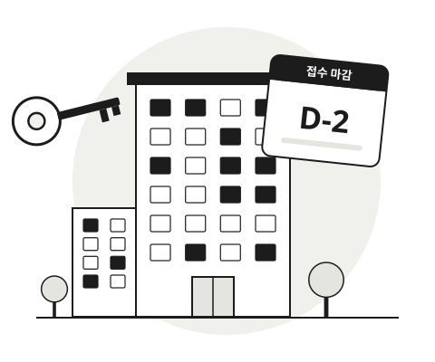

부모님 집에서 처음 나와 살 곳을 찾는 분
월세 부담을 줄이고 싶지만 공공임대주택이 어떤 제도인지부터 낯선 경우
공공주거 길잡이는 청년이 공공임대주택 공고를 찾고, 이해하고, 신청 일정을 끝까지 챙기도록 돕는 서비스입니다. 흩어진 공고와 어려운 공고문, 여러 단계로 이어지는 일정을 한곳에서 정리해 드립니다.

만 19~39세 청년 가운데, 공공임대주택에 관심은 있지만 어디서부터 시작해야 할지 막막한 분을 위해 만들었습니다.
월세 부담을 줄이고 싶지만 공공임대주택이 어떤 제도인지부터 낯선 경우
바빠서 공고를 매일 확인하기 어렵고, 접수 기간을 자주 놓치는 경우
자격은 되는데 서류 준비나 발표 일정 확인에서 기회를 놓쳤던 경우
서비스 화면에서는 왼쪽 메뉴로 언제든 기능을 옮겨 다닐 수 있습니다. 순서대로 쓰지 않아도 됩니다.
9개 질문에 답하면 지금 모집 중인 공고 가운데 내 조건에 맞는 공고를 보여드립니다.
공고 링크를 등록하면 신청 자격, 일정, 임대 조건을 정리하고 어려운 용어를 쉬운 말로 풀어드립니다.
공고의 접수 시작일과 마감일을 월간 캘린더에서 D-day와 함께 한눈에 봅니다.
스크랩한 공고를 지원 단계별로 모아 보고, 공고마다 진행 상황과 결과를 기록합니다.
한 번에 끝나는 서비스가 아니라, 신청 기간 동안 여러 번 들러 확인하는 서비스입니다.
회원가입 없이 바로 시작할 수 있습니다.